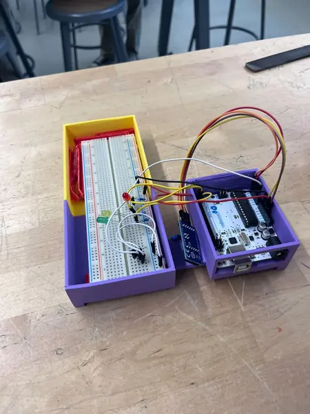
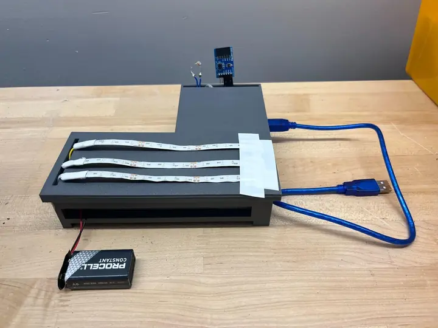

Scroll story 01 / adaptive vehicle headlights
Protolight
Six chapters follow our four-person team from environmental sensing to the actual L-shaped prototype. My documented role was physical manager, coordinating CAD, programming, and construction while contributing to the housing, wiring, printing, and Arduino work.
Scroll story · six chapters
Every part has
a story to tell.
Keep scrolling: the sticky drawing changes with each engineering decision.




- 01 Three LED channels
- 02 Sensor inputs
- 03 Arduino control
Read the conditions.
The photoresistor measures ambient light. A temperature and humidity sensor adds environmental data for fog-mode decisions, while temperature also provides an overheating safeguard.
- Ambient light → brightness
- Humidity + temperature → fog-mode logic
- Temperature → heat safeguard
Turn readings into light.
The Arduino connects the sensor readings to three LED channels. The prototype adjusts brightness and switches lighting modes as the inputs change.
My notebook role was physical manager: coordinating the CAD, programming, and physical build with our four-person team.
Explore the circuit and buildGive the electronics
a place to live.
The physical layout has to support both the circuit and the light. The L-shaped design groups the electronics beside three long LED channels, while the cover gives each strip a defined place.
- Three recesses locate the LED strips
- A separate area accommodates the electronics
- The cover turns a layout into a printable part
On screen: an actual CAD export from our engineering notebook.
Make the connections.
Then check them.
The early assembly brought the Arduino, breadboard, sensors, and LED wiring into one physical system. It let us work through the gap between a circuit idea and a build we could test.
On screen: our actual early circuit and printed enclosure.
The first fit
is a starting point.
The notebook documents several case revisions. Wire clearance, component access, and cover tolerances all had to work together, so we adjusted the printed parts as the physical build developed.
- Check how the cover seats
- Leave clearance for the wiring
- Keep the sensor positions exposed
On screen: an earlier prototype, before the final L-shaped cover.
From a model
to the real thing.
The final L-shaped cover holds three LED strips and leaves the environmental sensors exposed. In testing, the system adjusted brightness with ambient light and activated fog-mode lighting under simulated high-moisture conditions.
Documented in May 2026. The next steps identified in our notebook were better calibration, enclosure refinement, and more realistic weather testing. This remains a concept prototype, not a road-certified headlight.
See the real CAD and photos